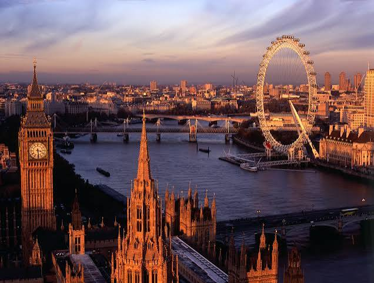
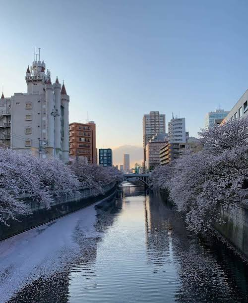

Por que esse sonho importa para mim
Esse é o meu sonho desde pequeno porque eu sempre quis conhecer mais sobre qualquer tipo de coisa. Não sei dizer exatamente o motivo, mas eu sempre tive o pensamento de que eu preciso conhecer novos lugares, pessoas e adquirir experiências. Parece que ficar onde eu estou nunca foi o suficiente, por isso quero conhecer muitos lugares do mundo inteiro! Outro "sonho" meu realmente é ser feliz sobre todas as coisas, não é como se eu fosse triste ou algo do tipo, mas eu me sentindo bem comigo mesmo e fazendo o que eu gosto é o mais importante. Esse é um dos objetivos mais importantes da minha vida1, porque eu acredito que eu vou me sentir mais completo.
Eu pretendo conseguir viajar para o máximo de países que eu conseguir estudando e me dedicando muito nesse momento atual da minha vida. Além de claro, juntar bastante dinheiro para isso. Acredito que assim que eu ir ao primeiro país, vai ser como um "carro sem freio", vou ir para mais e mais! Isso foi algo que comeceia sonhar desde que me mudei aqui para o interior de São Paulo, com uns 9 anos, e desde então carrego esse objetivo comigo.
1 Ao lado de quem eu amo, fazendo o que eu quero!
Galeria dos sonhos

